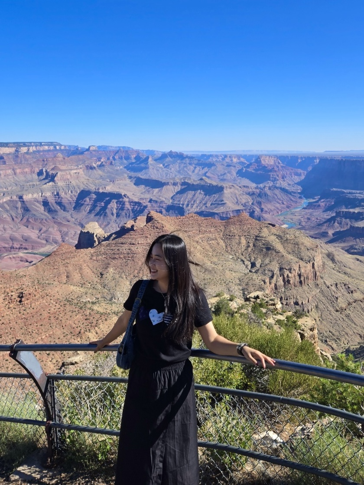

About Me

Sojin Kim
I am a Postdoctoral Researcher at the Human-Centered Artificial Intelligence Research Institute, Ewha Womans University, Seoul, South Korea. My research interests span three areas: Machine Learning Methodologies, Survival Analysis & Biostatistics, and Application of AI·ML.
Research Experience
- 2025.12 ~ Present Postdoctoral Researcher, Human-Centered Artificial Intelligence Research Institute, Ewha Womans University, Seoul, South Korea
- 2025.3 ~ 2025.11 Postdoctoral Researcher, Dept. of Statistics, Ewha Womans University, Seoul, South Korea
- 2025.8 ~ Present Researcher, Dept. of Family Medicine, Kangbuk Samsung Hospital, Seoul, South Korea
- 2023.4 ~ 2024.2 Research Assistant, Division of Media, Ewha Womans University, Seoul, South Korea
- 2022.9 ~ 2023.2 Visiting Student, Institute for Software Research, Carnegie Mellon University, Pittsburgh, U.S.
Teaching Experience
- 2025.9 ~ Present Lecturer, Graduate School of Technology Management, Hanyang University, Seoul, Korea
Work Experience
- 2018.8 ~ 2020.2 Data Analyst, Big Data Team, Lotte Mart, Seoul, South Korea